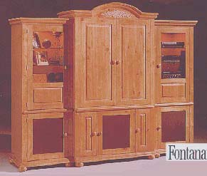

was the Broyhill Fontana, which looks like this.

It was a really nice piece...well, four pieces, actually, since it's composed of two side units, a hutch, and a pedestal the hutch sits on. They did a good job creating an antique pine look on its surface. But with a total width of over nine feet, it was a truly enormous piece of furniture—so big there was no way we could fit it in our apartment or in any home we could forseeably afford.
So, with some regret, I sold it.